arXiv 2606.13102 · cs.RO · v4 2026 年 10 月 27 日 · CoRL 2026 · 中文精读
FTP-1: A Generalist Foundation Tactile Policy Across Tactile Sensors for Contact-Rich Manipulation
作者 Chengbo Yuan（项目负责人）、Zicheng Zhang、Mingjie Zhou（三人共同一作）、Wendi Chen、Yi Wang、Zhuoyang Liu、Dantong Niu、Shuo Wang、Hui Zhang、Wenkang Zhang、Yingdong Hu、Yuanqing Gong、Wanli Xing、Chuan Wen、Cewu Lu、Kaifeng Zhang（通讯）、Yang Gao（通讯）。单位：清华大学、上海期智研究院、Sharpa、上海交通大学、UC Berkeley、ETH Zurich、复旦大学、上海创智学院。
关于这份精读。这篇论文在 arXiv 上以 CC BY-SA 4.0 发布（2026-11-23 查摘要页）。PDF 首页页脚只有会议名“10th Conference on Robot Learning (CoRL 2026), Austin, Texas, USA”，没有和这个许可矛盾的版权声明。按 ShareAlike 条款，本页的文字和裁切图同样按 CC BY-SA 4.0 提供，署名 Yuan 等。
版本。我读的是本地 PDF，页眉写 arXiv:2606.13102v4 [cs.RO] 27 Oct 2026。摘要页的提交历史：v1 2026-06-11，v2 2026-06-19，v3 2026-10-13，v4 2026-10-27。约稿时说的是 v2，但手上的文件是 v4，所以本页按 v4 写，“看原图”也链到 v4。v2 和 v4 的差别我没有逐字比对（未核实）；从文件大小看 v1、v2 都是 23,063 KB，v4 是 24,103 KB，可能加了附录内容。
图。图 1–7、图 9–16 从 PDF 裁切（pdftoppm 250 dpi 渲染，用 pdftotext -bbox 定位，只裁切，再用 PIL 转 webp，宽 360–1394 px），没有改动内容；图下文字是我写的。图 8 没有放：原文说它“取自 UniDex 原论文”，是第三方的图，我只用文字描述。原文没有编号公式，§2 和附录 B 的几个式子我照原文写出，不编号；代码里的式子标“代码”。表 1–4、表 7–12 照录原文数字，表 5、表 6 是文字表，我压缩成中文。“读者注”是整理时核算或对照得到的，不属于论文内容，页尾有汇总。
代码和权重。官方代码 michaelyuancb/ftp1-policy，我读的是提交 89fa681（2026-07-15），只读没有运行。根目录 LICENSE 是 Apache-2.0，另有 LICENSE_GEMMA.txt（Gemma 使用条款，来自 openpi 的 PaliGemma 权重）。仓库里的 UniVTAC/ 是第三方基准的拷贝，子目录许可不一，其中 libuipc 的 Python 绑定是 GPL-3.0（见代码与复现要点）。本页只引文件名、行号和配置键，不复制代码。Hugging Face 上预训练权重 ftp1_v0426_50kstep 我只下载了几个小的 JSON 和 model.safetensors 的文件头（约 180 KB，只含张量名和形状），没有下载权重本身；模型卡和数据集卡都没有写许可。
触觉传感器五花八门：有的输出一张图（GelSight 这类视触觉），有的输出一个压力阵列（手套、皮肤），有的只输出几维力或力矩。已有的触觉策略都绑定一种传感器、一种机器人。FTP-1 想做“触觉版的 π0.5”：一个预训练好的策略，换传感器、换机器人以后微调一下就能用。
读完我认为最值得记住的五点：
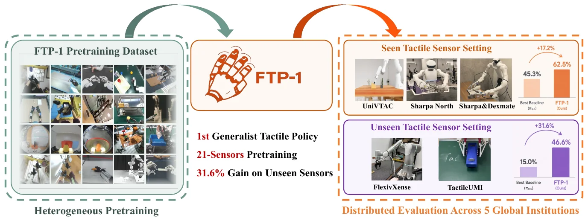
这一节回答“FTP-1 是不是 Sharpa 那套 CraftNet”。我只按论文和代码说话：
LingBot-Touch（arXiv 2611.12806，2026-11）来自 Robbyant（蚂蚁灵波），作者里没有 Sharpa 或 FTP-1 的作者。它和 Sharpa 的联系是数据：三分之一的预训练数据来自遥操作的 Sharpa Wave 手，评测的“见过的手”也是 Sharpa Wave。它在 §2.2 把 FTP-1 列为“主要对手”，§4.2 和 §5.4 都拿 FTP-1 做基线。两篇解决的是同一个问题（不同触觉传感器的数据怎样放进同一个模型），但出发点不同：
| FTP-1（本文） | LingBot-Touch | |
|---|---|---|
| 产物 | 一个完整的策略（VLA），输出动作 | 一个触觉编码器，输出表征，要接到别的策略上 |
| 规模 | 整模型约 36.4 亿参数（权重文件头数出，读者注 8）；触觉部分是 T3 主干 + 触觉专家 | Tiny 5.46M、Small 21.76M |
| 训练目标 | 动作的流匹配（监督，需要动作标签） | Tactile-JEPA：隐空间预测，自监督，不需要动作 |
| 数据 | 26 个来源、21 种传感器、约 3,000 小时；人手 / 灵巧手 / 夹爪重采样后 20 / 30 / 50% | 4,983 小时；压阻、磁、视触觉三类；手套三分之二、Sharpa Wave 遥操作三分之一 |
| 不同传感器怎么对齐 | 功能区：每只手 24 个离散槽位，信号按“属于哪块手”分组；同一功能区的所有触点压成一个 token | 几何：每个触点映射到一个单位半径的标准指尖空间，带连续三维坐标和手指编号 |
| token 粒度 | 每个功能区一个 token，每只手最多 24 个；空间细节都压进这一个 token | 每个触点每 2 帧（Small 实际 4 帧）一个 token，一只手几百个 |
| 位置信息怎么进模型 | 加一个可学习的功能区嵌入（左右手共 48 个） | 五维 RoPE（时间、手指、xyz），没有可学习位置表 |
| 传感器专用参数 | 每种传感器（按观测形状）一个编码器：图像型 3 层 ViT，阵列型 CNN，状态型 MLP；图像型再共享 T3 主干 | 只按模态分三个浅层 tokenizer（两层 MLP），没有按传感器的参数 |
| 新传感器怎么接 | 新建一个传感器编码器，和整模型一起微调；复用触觉专家、功能区嵌入、T3 主干（§4） | 按几何标定映射到标准空间，交给对应模态的 tokenizer，不更新参数 |
| “没见过的传感器”评测 | Xense（视触觉）、Contactile（阵列）：微调后的任务成功率，3 个任务 60 次 | XHand1（磁）：冻结特征的探针（力、接触中心、面积、未来力、检索）；26 个真机任务 |
| 和对方比 | 没有和 LingBot-Touch 比（FTP-1 早约五个月） | 冻结 FTP-1 公开的共享触觉骨干、每个传感器训一个适配器，探针和策略都比 FTP-1 好（见该页 §4.2、§5.4） |
我的看法（我的推断）：两者的差距主要在“空间分辨率”这一点上。FTP-1 把一个指尖压成一个 token，这对“这根手指是否接触、力大不大”够用，但接触中心、接触面积这种空间量要靠编码器把它塞进一个 512 维向量；LingBot-Touch 保留到触点级。LingBot-Touch 页 §4.2 里 FTP-1 在接触中心上误差最大（Sharpa Wave 上 2.19 mm 对 0.12 mm），和这个解释一致，但那一页的对比里 FTP-1 的输入端被换成了新训的适配器，不是它原生的图像 tokenizer，所以不能直接当成 FTP-1 原样的表现。另一方面，FTP-1 是一个能直接出动作的策略，它的优势应该在策略层（触觉专家和动作专家一起预训练），LingBot-Touch 的 §5.4 只拿 FTP-1 的“触觉编码器”接到别人的策略上比，没有比较两个完整策略。
GR00T N1。同样是“VLM + 流匹配动作模块”，但处理不同机器人的方式相反：GR00T N1 给每种具身一套状态和动作的编解码 MLP（32 个槽位），FTP-1 用一个固定布局的 120 维统一动作空间（UAS），每个机器人只填自己有的维度，缺的维度在损失里掩掉（附录 B.1）。触觉方面 GR00T N1 没有触觉输入。
MolmoAct2。MolmoAct2 的动作专家每一层直接读 VLM 那一层的 K、V；FTP-1 继承 π0.5 的写法，也是每层把各专家的 Q、K、V 拼起来做一次带掩码的注意力，区别是多了第三路（触觉），并且触觉和视觉语言两路互相看不见（附录 B.4）。两者都只在动作 token 那一侧汇合多路信息。
LIBERO、OpenWAM。FTP-1 的代码基于 openpi（π0 / π0.5 的官方仓库），仓库里还带着 openpi 的 LIBERO 示例目录 examples/libero，但论文没有在 LIBERO 上评测。
CraftNet、WM-Craftnet。都是 Sharpa 的工作，见上面“和 Sharpa / CraftNet 的关系”。这里不复述那两页的结论。
问题。通用机器人策略（OpenVLA、π0.5、GR00T N1 等）靠大规模异构数据预训练，再快速适配到新机器人和新任务。触觉策略还没走到这一步。已有的预训练触觉策略（OmniVTLA、VTDexManip、OmniVTA）都绑定少数传感器、固定的观测格式和机器人。根子在于触觉信号随硬件变化太大：模态、分辨率、形态、接触响应都不同。作者问：一个触觉策略能不能吸收异构的触觉经验，并迁移到预训练没见过的传感器和机器人上？
做法。FTP-1（Foundation Tactile Policy）是一个跨传感器、跨本体预训练的动作生成模型，组件可以复用到新硬件和新任务。它支持图像型、阵列型、状态型三类触觉输入。为此提出“形态感知的触觉 token 空间”MTTS：用固定的一组功能区 token 表示触觉，每个 token 加一个共享的功能区嵌入；异构编码器把不同传感器投影进这个空间。上面是多专家的基础策略结构，一个共享的触觉 Transformer 专家统一处理触觉 token。
数据和评测。作者整理了 FTP-1-Dataset：26 个来源、约 3,000 小时、21 种传感器的人和机器人示教，全部按 MTTS 标准化。预训练权重分给全球 5 个独立机构，各自在一套硬件上微调，共涉及 4 种触觉传感器、14 个任务（手内调整、控力按压、插拔、长时程精细灵巧操作）。结果：见过的 3 套传感器设置提升 17.2%，没见过的 2 种传感器提升 31%（这两个数的口径见读者注 1、2）。消融说明收益来自可迁移的触觉技能。
贡献。（1）FTP-1 本身：形态感知的触觉 token 化 + 共享触觉专家；（2）26 个来源、21 种传感器的聚合数据集；（3）触觉操作知识可迁移的实验证据，包括没见过的传感器。
输入是语言指令 \(\ell\)、（多视角）RGB 图像 \(I_t\)、本体感觉 \(s_t\) 和触觉观测 \(X_t\)，输出一个动作块：
\(H\) 是动作视野，\(D\) 是预定义的统一动作空间（UAS，沿用 UniDex）的维数，细节在附录 B.1。论文正文没给 \(H\) 和 \(D\) 的数值；代码和公开权重是 \(H=32\)、\(D=120\)（ftp1_model_config.py:27，权重的 model_config.json）。下面依次是 MTTS（§2.1）、异构编码器（§2.2）、共享触觉专家（§2.3）和预训练数据（§2.4）。
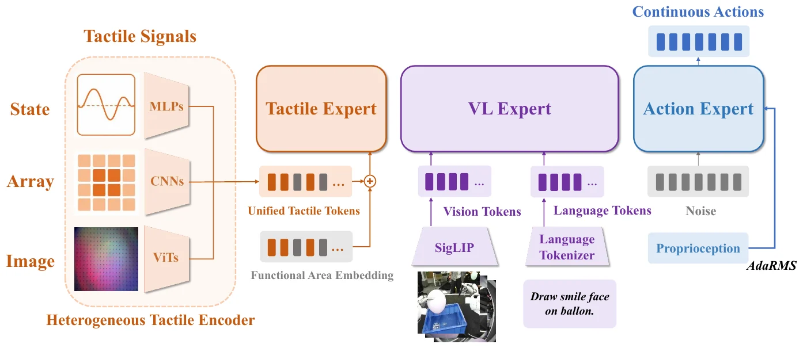
不同传感器的模态、分辨率、形态都不同，难以共享表示。MTTS 把触觉信号组织成 24 个功能区（这个划分引自 [14]，人形“触觉做梦”那篇），每个功能区一个 token，定义见图 3：
各传感器的信号先按功能区分组，再编码成统一的 token。为了告诉模型每个 token 属于哪个功能区，在送进后面的网络前加一个可学习的功能区嵌入，所有传感器共享；左右手用两套嵌入。
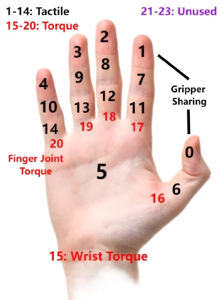
MTTS 给了统一的 token 接口，但输入的形状和模态还是各不相同，所以用异构编码器（沿用 HPT 的思路）。每种传感器先按功能区分组，再把每组归到三种观测类型之一：
同一种传感器上多个功能区观测形状相同时，共用一个编码器，减少传感器专用参数，也让相同的触觉动态被一致地建模。细节在附录 B.2。
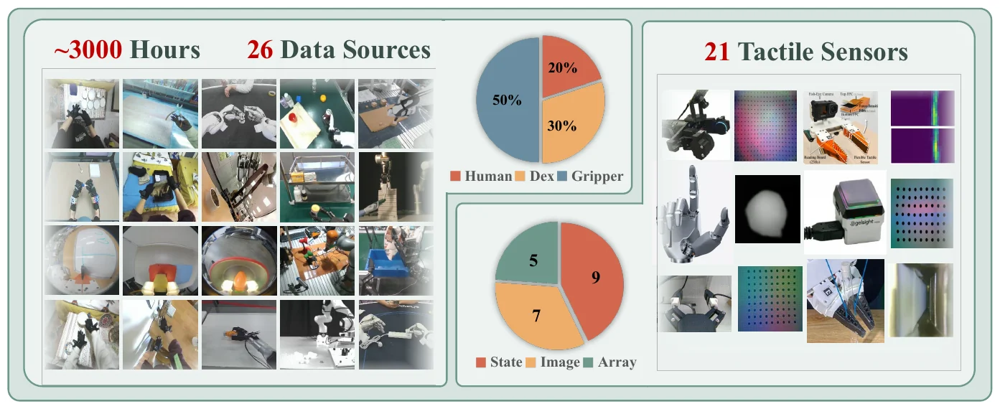
FTP-1 在 π0.5 的基础上用多专家结构：预训练的视觉语言 Transformer 专家（PaliGemma）处理图像和指令；流匹配的动作专家读它的输出。本体感觉用 adaRMS 注入：一个 MLP 编码本体感觉的 Fourier 特征，归一化后和流匹配的时间步特征拼接，去调制注意力块。细节在附录 B.3。
以往的“触觉增强 VLA”多用轻量适配器把触觉注入视觉语言专家（Tactile-VLA、OmniVTLA、ForceVLA2 等）。FTP-1 改用一个独立的触觉专家处理触觉 token。作者给了三个理由：（1）微调到没见过的传感器时可以复用预训练好的触觉专家，促进可迁移的触觉技能；（2）不扰动视觉语言专家里的预训练知识；（3）处理触觉更高效，接触丰富任务的表现更好（和 Tactile-VLA 的对比见 §3、§4.1）。
融合方式：动作专家的 query 去看触觉专家和视觉语言专家的 key、value。视觉语言和触觉各自只在本流内做注意力，动作 token 看全部三路。这个分块掩码让触觉直接影响动作生成，同时保持视觉语言和触觉分开处理，连接方式见附录 B.4。触觉专家是一个 3 亿参数的 Transformer（公开代码和权重不是，见读者注 8）。更复杂的融合（比如 MoE）在作者的实验里没有稳定的收益，所以用最简单的多专家结构。
预训练数据集（图 4）聚合自 26 个来源，覆盖 21 种传感器：7 种图像型、5 种阵列型、9 种状态型。除了已有数据，作者用 Sharpa North 新采了 Sharpa North-FTP-1，含 4,000 条长时程灵巧示教。所有触觉标注都按 MTTS 功能区整理。为缓解数据不平衡，每个来源设一个采样倍率；重采样后人手、灵巧手机器人、夹爪机器人三类大约占 20%、30%、50%。合计约 3,000 小时。细节在附录 C。
自己画的 · 11 幕 3D 框架动画
总览、三类触觉信号长什么样、图像型编码器（传感器专用 ViT + 共享 T3）、阵列型和状态型编码器（Fourier + CNN / MLP）、MTTS 的 24 个槽位、功能区嵌入和统一投影、三专家的分块注意力、adaRMS 和流匹配出 120 维动作块、26 个来源的重采样、新传感器微调时哪些模块复用、结果表。网络尺寸按公开代码和权重画，论文和代码不一致的地方两种都标出。下面嵌的是第 7 幕。
核心问题：FTP-1 预训练能不能通过学到有效的触觉感知表征，改善下游触觉策略的微调？作者把预训练权重分给 3 个独立机构，各自在一套本体和任务上评测，覆盖仿真和真机。训练细节在附录 D。
仿真每个任务 100 次，照原基准的做法；真机每个任务 20 次。报告微调后的成功率，和三个基线比：
所有方法都在 π0.5 代码库上实现，模型规模、微调数据和训练流程相当。
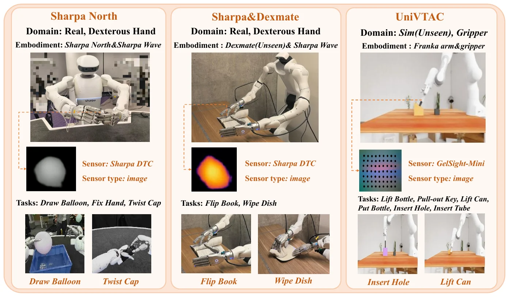
三个本体：仿真的 UniVTAC，真机的 Sharpa North 和 Sharpa&Dexmate。涉及两种预训练里有的传感器：GelSight-Mini 和 Sharpa DTC，所以触觉 tokenizer 和触觉专家都从 FTP-1 权重初始化。UniVTAC 选 6 个接触丰富任务（手内操作和接触感知的插拔）；Sharpa North 三个长时程灵巧任务：画气球、修手、拧盖（可变形物体、小零件装配、双手拧）；Sharpa&Dexmate 侧重按压和控力：翻书、擦盘。硬件、任务定义、排除的 UniVTAC 任务见附录 E.1、E.2，执行示例见 E.3。
仿真。表 1 是 UniVTAC 的结果。意外的是，Lift Bottle 和 Lift Can 在仿真里不用触觉也基本能做：π0.5 已经有 97% 和 72%。所以另报一个去掉这两项的平均。FTP-1 两个口径都最好：总平均 66.66%，去掉 Lift 后 59.5%，都比第二名高约 17.5 个点。
| 方法 | Lift Bottle | Pull-out Key | Lift Can | Put Bottle | Insert Hole | Insert Tube | Avg. | Avg. w/o Lift |
|---|---|---|---|---|---|---|---|---|
| VITaL* | 72 | 47 | 8 | 32 | 25 | 34 | 36.33 | 34.5 |
| UniVTAC-ACT* | 71 | 46 | 29 | 31 | 25 | 56 | 43.00 | 39.5 |
| π0.5 | 97 | 38 | 72 | 16 | 31 | 41 | 49.16 | 31.5 |
| Tactile-VLA | 97 | 32 | 15 | 10 | 41 | 56 | 41.83 | 34.75 |
| FTP-π0.5 | 77 | 30 | 26 | 19 | 47 | 72 | 45.16 | 42 |
| FTP-1 | 97 | 48 | 65 | 47 | 64 | 79 | 66.66 | 59.5 |
表 1：VITaL 218/6 = 36.33，138/4 = 34.5；UniVTAC-ACT 258/6 = 43.00，158/4 = 39.5；π0.5 295/6 = 49.17，126/4 = 31.5；Tactile-VLA 251/6 = 41.83，139/4 = 34.75；FTP-π0.5 271/6 = 45.17，168/4 = 42；FTP-1 400/6 = 66.67，238/4 = 59.5。全部对得上，只是原文的两位小数是截断不是四舍五入（49.16、45.16、66.66）。“比第二名高约 17.5”：总平均第二是 π0.5，66.67 − 49.17 = 17.5；去 Lift 第二是 FTP-π0.5，59.5 − 42 = 17.5，成立。
表 2：Tactile-VLA 215/6 = 35.83；FTP-π0.5 250/6 = 41.67（原文 41.6，截断）；FTP-1 375/6 = 62.5。π0.5 是 275/6 = 45.83，原文写 45.3，见读者注 1。表 3：π0.5 45/3 = 15.0，Tactile-VLA 25/3 = 8.33，FTP-π0.5 45/3 = 15.0，FTP-1 140/3 = 46.67（原文 46.6，截断）。带 * 的两行我没有回 UniVTAC 原论文核对，未核实。
| 方法 | Sharpa North | Sharpa&Dexmate | 平均 | ||||
|---|---|---|---|---|---|---|---|
| Draw Balloon | Fix Hand (Tear) | Fix Hand (Finish) | Twist Cap | Flip Book | Wipe Dish | ||
| π0.5 | 35 | 70 | 35 | 40 | 65 | 30 | 45.3 |
| Tactile-VLA | 20 | 80 | 25 | 10 | 45 | 35 | 35.8 |
| FTP-π0.5 | 25 | 65 | 25 | 20 | 70 | 45 | 41.6 |
| FTP-1 | 45 | 80 | 40 | 65 | 85 | 60 | 62.5 |
真机。FTP-1 平均 62.5%，最好。意外的是不带触觉的 π0.5 排第二（45.3%），高于两个带触觉的基线。作者的解释：没有合适的模态融合时，触觉输入会干扰视觉语言感知，反而有害（和 [14] 的观察一致），在 Sharpa North 的长时程任务上尤其明显。行为上，Tactile-VLA 和 FTP-π0.5 在接触条件变化时动作不稳；π0.5 没有触觉，在两个 Sharpa&Dexmate 任务上有时维持不住按压力，拧盖时顶着瓶盖不会随力调整。FTP-1 的动作更稳、更平滑。
出处：图 1 右上的柱子写 45.3% → 62.5%、+17.2%，即表 2 的 FTP-1 平均减 π0.5 平均：62.5 − 45.3 = 17.2。所以它是绝对百分点，而且只含表 2 的两套真机（6 列，都用 Sharpa DTC）。摘要和 §1 说“在 3 套见过的传感器设置上提升 17.2%”，但第三套 UniVTAC 的提升是另一个数（表 1，+17.5）。
问题在 45.3：π0.5 那一行 35 + 70 + 35 + 40 + 65 + 30 = 275，275 / 6 = 45.83。我试了其他口径：把 Fix Hand 两列合成一个任务（只取 Finish）是 205/5 = 41.0；按两个设置各自平均再平均是 (180/4 + 95/2)/2 = 46.25，都不是 45.3。同一张表的另三行都是“6 列直接平均再截断”。所以 45.3 很可能是 45.8 的笔误（我的推断）。按 45.83 算，提升是 62.5 − 45.83 = 16.7 个点。相对提升是 62.5 / 45.83 − 1 = 36%。
已有工作表明同一种传感器上的预训练能改善下游策略（T3、OmniVTLA、OmniVTA），但大规模异构预训练能否迁移到没见过的传感器还不清楚。这里说的“没见过的传感器”是指 FTP-1 预训练里没有的具体硬件。Xense 和 Contactile 分别属于预训练覆盖到的图像型和阵列型。微调时，FTP-1 用目标传感器采的示教新训一个传感器专用编码器，复用预训练的触觉专家、功能区嵌入，图像型还复用共享的 T3 主干；视觉语言专家和动作专家也从 FTP-1 权重初始化。所有方法用相同的示教和附录 D 的微调流程。
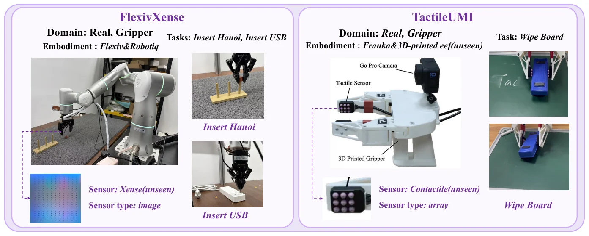
权重分给另外两个机构：FlexivXense 用 Xense 图像型传感器，TactileUMI（来自 Tactile-VLA）用 Contactile 阵列传感器。附录 E.4 给了预训练里和它们最像的传感器。任务：FlexivXense 两个精细插入（Insert Hanoi：把小圆环套到柱子上；Insert USB），每任务 100 条示教；TactileUMI 一个控压任务 Wipe Board，每任务 50 条。执行示例见附录 E.5。
| 方法 | FlexivXense | TactileUMI | 平均 | |
|---|---|---|---|---|
| Insert Hanoi | Insert USB | Wipe Board | ||
| π0.5 | 25 | 0 | 20 | 15.0 |
| Tactile-VLA | 0 | 10 | 15 | 8.3 |
| FTP-π0.5 | 5 | 10 | 30 | 15.0 |
| FTP-1 | 55 | 30 | 55 | 46.6 |
FTP-1 平均 46.6%，最高；比 FTP-π0.5 的 15% 高 31.6 个点，说明大规模异构触觉预训练在没见过的传感器上也能改善微调。π0.5 和 FTP-π0.5 相当，说明光加一个触觉分支、没有合适的融合先验和预训练知识，不一定有用。行为上：Insert Hanoi 里 FTP-1 和 π0.5 都会出错后恢复，其他基线不会，作者认为这来自大规模预训练；FTP-1 还会根据触觉在圆环没对准柱子时放慢插入，π0.5 不会。Insert USB 只有 100 条示教很难学，是数据效率的测试，其他模型插入时更不稳、会轻微抖动。Wipe Board 和 Sharpa&Dexmate 的情况类似：其他模型难以维持稳定压力，擦的时候会离开板面。
绝对百分点。表 3：46.6 − 15.0 = 31.6。摘要和 §1 写 “+31%”，图 1 和 §4.1 写 “31.6%”、“31.6% point gain”。π0.5 和 FTP-π0.5 都是 15.0，所以“对最好基线”和“对没有预训练的同结构”是同一个数。
按原始数据 FTP-1 是 140/3 = 46.67，四舍五入应写 46.7、差 31.7；原文截断成 46.6。换成相对提升：46.67 / 15.0 = 3.11 倍，即 +211%。分到任务看：FlexivXense 两个插入平均 42.5 对 π0.5 的 12.5、FTP-π0.5 的 7.5；TactileUMI 一个任务 55 对 30。三个任务合计只有 60 次试验（读者注 12）。
两种可能的解释：
为此预训练一个 NTP（No-Tactile-Pretraining）权重：设置和 FTP-1 一样，数据也一样，但不用触觉输入、去掉触觉相关结构。微调时再加上和 FTP-1 相同的触觉结构，叫 NTP-1。在 UniVTAC（见过的传感器）和 FlexivXense（没见过的传感器）上评测，微调设置同上。
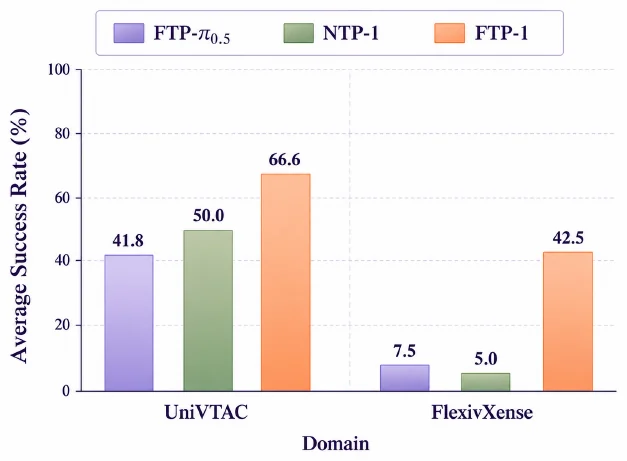
三者结构完全相同，只差预训练权重。UniVTAC 上 NTP-1 好于 FTP-π0.5，说明 FTP-1-Dataset 的分布可能更接近 UniVTAC；但 NTP-1 仍不如 FTP-1，说明预训练给了触觉分支有用的初始化。FlexivXense 上 FTP-1 比 NTP-1 高 37.5 个点，说明迁移到这个领域必须有触觉预训练。没有触觉分支的预训练，NTP-1 对触觉变化不鲁棒，关键插入阶段动作不稳。这些结果支持假设 2。
图 7 UniVTAC 组的 FTP-π0.5 柱标 41.8。表 1 和附录表 10 的 FTP-π0.5 平均都是 45.16（271/6），§4.3 和表 11 的“0%（FTP-π0.5）”也是 45.2。41.8 恰好是表 1 里 Tactile-VLA 的平均 41.83。所以图 7 很可能画错了一行（我的推断）。这不影响 §4.2 的结论（FTP-π0.5 < NTP-1 < FTP-1 两种读法都成立）。
其余数字：NTP-1 = 300/6 = 50.0（表 10），FTP-1 = 66.6；FlexivXense 的 FTP-π0.5 = (5 + 10)/2 = 7.5，FTP-1 = (55 + 30)/2 = 42.5，都和表 3 一致；“+37.5%”= 42.5 − 5.0，是百分点。附录 E.6 说“详细结果在表 10”，但表 10 只有 UniVTAC；NTP-1 在 FlexivXense 两个任务上的分项成绩论文没给，5.0 只能是平均。
匹配的 VLA 预训练。为了控制“FTP-1 预训练见过更多机器人轨迹”这个因素，把 π0.5 在同样的机器人轨迹、同样的预训练预算上继续预训练（只用视觉-语言-动作输入）。微调后它在 UniVTAC 上总平均 57.0%、去 Lift 44.0%（表 4），FTP-1 分别高 9.7 和 15.5 个点。说明触觉预训练的收益不只来自多看了机器人轨迹。
| 方法 | Avg. | Avg. w/o Lift |
|---|---|---|
| π0.5，匹配预训练 | 57.0 | 44.0 |
| FTP-1 | 66.7 | 59.5 |
预训练预算的缩放。数据量和训练步数一起缩放：50% 条件是一半数据、一半步数。UniVTAC 平均从无预训练的 45.2% 升到 50% 时的 59.0% 和 100% 时的 66.7%。完整结果在附录 F.2。
触觉特征探针。用冻结的触觉特征预测力和滑动（附录 F.3）。相对 T3 初始化，注意力探针的滑动 F1 从 0.725 升到 0.780（FTP-1 主干）和 0.786（tokenizer）。力探针也能恢复定量的力信息。作者认为这是表征层面的证据，补充下游策略评测。
算术：66.7 − 57.0 = 9.7，59.5 − 44.0 = 15.5；表 11 里 59.0 − 45.2 = 13.8，46.0 − 42.0 = 4.0，66.7 − 59.0 = 7.7，59.5 − 46.0 = 13.5，66.7 − 45.2 = 21.5，59.5 − 42.0 = 17.5，全部成立。
两点保留：一是 50% 条件同时减半了数据和步数（25,000 步），所以表 11 分不开“数据多”和“训练久”哪个起作用；而且去 Lift 的平均在 0% → 50% 只涨 4 个点、50% → 100% 涨 13.5，单看三个点说不了是什么曲线。二是表 12 里力的两个探针 FTP-1 都不比 T3 好：T1 上 0.107 对 0.106（基本持平），FeelAnyForce 上 0.314 对 0.273，误差大 15%；tokenizer 特征 0.424，更差。所以正文“力探针也能恢复定量力信息”只说明“还剩着”，不是“变好”。附录 F.3 的措辞（“quantitative force information remains accessible”）更准确。
详细综述和传感器覆盖、动作生成、迁移评测的对比在附录 A 和表 5、6。通用机器人策略（OpenVLA、π0、π0.5、GR00T N1、RDT-1B）在任务、本体、环境上迁移得好，但基本不用触觉。已有的触觉策略和 VTLA（ViTacFormer、Tactile-VLA、OmniVTLA、VTLA、ForceVLA2）证明了触觉对接触丰富操作的价值，但通常绑定特定传感器、任务或本体。触觉表征和策略预训练（Sparsh、AnyTouch、ViTaL、T3、OmniVTA、FreeTacMan）改善了触觉感知或下游控制，但没有做到端到端、与传感器无关的通用触觉策略。FTP-1 把通用策略范式扩展到触觉操作：不把触觉当成某个传感器的附加件，而是研究触觉技能能否大规模预训练并跨传感器和本体迁移。
FTP-1 是一个为跨传感器、跨本体微调而预训练的通用触觉基础策略。在 26 个来源、21 种传感器的数据上预训练后，它在 5 套硬件上改善了见过和没见过传感器的微调表现，为触觉策略学习提供了一个共享的模型级起点。
局限和方向。作为初步探索，FTP-1 主要关注通用触觉感知，还没有处理基于触觉或力的伺服和控制。把异构编码框架扩展到触觉预测和基于预测的底层控制是一个方向。另一个局限是预训练数据的规模和多样性仍然有限，更大的聚合数据集和进一步扩大预训练留给以后。
致谢（第 10 页）：上海期智研究院创新项目和清华“笃实”计划资助；感谢 Sharpa Pte Ltd. 提供硬件、算力和 Sharpa North-FTP-1 数据集；感谢 Aether Embodied Technology（北京）提供 EgoTac 第一视角人类数据和 AetherGlove 手套；感谢 PaXini Technology（深圳）提供 OmniSharingDB 人类数据。
A.1 通用操作策略。机器人学习从任务专用策略（Diffusion Policy、ACT）转向通用策略：在大规模机器人数据（Open X-Embodiment、DROID、RoboCOIN）上训练，再快速适配新环境、本体和任务。机器人示教之外，人体运动、语义隐 token、视频生成、视觉问答等异构信号也被加进训练。但通用策略基本不用触觉。
A.2 接触丰富操作的触觉策略。通用触觉策略缺席，主要因为触觉硬件太异构（TACO 基准）。不过大量针对特定传感器的视触觉策略（3D-ViTac、RDP、MimicTouch、ViTaMIn、exUMI 等）都显示触觉明显改善接触丰富操作。另一条线是 VTLA：在预训练的视觉基础策略上加触觉输入（Tactile-VLA、VLA-Touch、VTLA、TacVLA、ForceVLA、ForceVLA2）。FTP-1 定位成“原生触觉”的基础模型，而不是任务专用策略或视觉策略的扩展。
A.3 大规模触觉表征预训练。一类（Sparsh、AnyTouch、ViTaL、T3 等）从视触觉配对数据学编码器，再给下游策略微调，但表征不是为操作端到端优化的。另一类直接在带动作的触觉操作数据上预训练策略（VTAO-BiManip、FreeTacMan、OmniVTA、TAMEn），但受限于特定传感器和数据规模。
A.4 和触觉表征、策略模型的比较。表 5 和表 6 从互补的角度比较代表性模型。“传感器覆盖”指论文报告的数据或训练设置，不是机器人上装了几个传感器。作者区分三件事：传感器个体之间的迁移、传感器设计之间的迁移、下游动作生成；“预训练编码器 + 任务专用策略头”和“预训练一个共享的动作生成触觉策略”不是一回事。“NR”表示原文没报告，不代表做不到。
| 模型 | 报告的触觉覆盖 | 学习目标 | 没见过传感器的评测 |
|---|---|---|---|
| T3 | FoTa 里 13 种传感器；图像输入 | 共享触觉表征 | 留出 GelSight Svelte、DenseTact 2.0；分类 / 位姿估计，有无微调两种 |
| Sparsh | 3 个家族：DIGIT、GelSight 2017、GelSight Mini | 自监督触觉表征 | 同家族的新个体；冻结特征的感知任务和下游策略 |
| AnyTouch | 5 种训练传感器；图像 / 视频 | 静态 / 动态触觉表征 | TACTO、Taxim 合成传感器；材质分类的线性探针 |
| FEATS | 1 种：GelSight Mini，多个个体 / 凝胶 | 稠密三维力分布 | 新的 Mini 个体 / 凝胶组合；力估计 |
| FeelAnyForce | GelSight Mini 训练；Mini 和 DIGIT 评测 | 三维接触力和深度 | 更多 Mini 个体（有无标定）；DIGIT 需微调回归头 |
| Tactile-VLA | 双指尖力传感；类型数 NR | 位置 / 力动作和触觉推理 | NR；泛化指指令、物体、任务条件 |
| OmniVTLA | ObjTac 和机器人上的 Paxini Gen2；另有编码器训练数据（总类型数 NR） | 对齐的触觉特征和动作 | 留出传感器的策略评测 NR |
| OmniVTA | 数据集 4 种；触觉 VAE 验证 3 种；机器人策略评测用 Xense | 触觉动态和动作 | 留出传感器的策略评测 NR |
| FTP-1 | 预训练 21 种；图像、阵列、状态 | 共享的动作生成触觉策略 | 在预训练没有的 Xense 和 Contactile 上微调策略 |
| 模型 | 动作生成 | 策略设置 | 真机策略评测 | 跨本体评测 |
|---|---|---|---|---|
| T3 | 下游行为克隆头 | 1：Franka Panda + 平行夹爪 | 有；插入 | NR |
| Sparsh | 下游扩散策略 | 1：Franka + 触觉手 | 有；珠子迷宫 | NR |
| AnyTouch | 下游模仿策略 | 1：xArm 6 + Robotiq | 有；倒水 | NR |
| FEATS | 力估计器 | NR | NR | NR |
| FeelAnyForce | 力估计器 + 反馈控制器 | 无学习策略；物理力反馈任务 | 力反馈控制演示 | NR |
| Tactile-VLA | 端到端位置 / 力策略 | 1 套夹爪；UMI 采数据 | 有 | 用 UMI 数据上机器人；留出机器人测试 NR |
| OmniVTLA | 端到端动作策略 | 2：UR5 + 夹爪 / 灵巧手 | 有 | 共享编码器，夹爪和手分别微调策略 |
| OmniVTA | 扩散策略 + 触觉控制器 | 1：xArm 7 + 平行夹爪 | 有 | 机器人和 TacUMI 用同款夹爪采；留出机器人测试 NR |
| FTP-1 | 共享的端到端动作策略 | 5：1 个仿真 + 4 套真机 | 有 | 夹爪和灵巧手上共享策略微调，包括新硬件 |
正文的小结：T3 和 AnyTouch 明确评测了跨传感器设计的迁移，Sparsh 评测了新个体；FEATS、FeelAnyForce 提供有物理依据的监督。Tactile-VLA 把触觉接到位置-力动作，OmniVTLA 把触觉和视觉语言对齐，OmniVTA 结合视触觉世界模型、扩散策略和反应式触觉控制器，它的数据集支持 4 种传感器，但真机策略实验只用了 Xense。FTP-1 的区别是：异构触觉输入 + 共享的预训练动作策略，在 5 套硬件上评测微调，其中 2 种传感器预训练没见过。
不同本体的动作空间不同，比如一个是单臂关节空间，另一个是双臂末端位姿。FTP-1 沿用 RDT 的做法，把所有命令表示成固定长度的稀疏向量。一个控制步的动作是：
\(\mathbf t_w\in\mathbb R^3\) 是腕部平移，\(\mathbf r_w\in\mathbb R^6\) 是 6D 旋转表示，\(\mathbf q_{arm}\in\mathbb R^7\) 是臂关节，\(\mathbf q_{hand}\in\mathbb R^{32}\) 是规范的手关节槽位；\(\mathbf a^{ego}=[\mathbf t^{ego},\mathbf r^{ego}]\)（3 + 6）是头部位姿；\(\mathbf a^{sup}\) 是给移动底盘、腰部等的补充槽位。手关节沿用 UniDex 的 FAAS（功能-执行器对齐空间）：功能相似的关节放进同一个槽位。原文图 8 是 UniDex 里八种灵巧手（Ability、Allegro、Inspire、Leap、Oymotion、Shadow、Wuji、Xhand）的关节映射，原文注明“复制自 UniDex 原论文”，本页不放。图 9 是作者给人手定义的 FAAS。平行夹爪用一个独立的槽位 28。每个本体只填它支持的槽位，训练时用掩码 \(M\in\{0,1\}^D\) 把缺失或不支持的维度排除出损失。这样 FTP-1 总是输出同一种布局。
正文没写 \(D\)。按上面的定义：每臂 3 + 6 + 7 + 32 = 48，两臂 96，加头部 9 是 105，代码再留 15 维补充槽位，\(D=120\)（ftp1_model_config.py:17-25，公开权重 action_dim: 120）。代码里右臂排在前面（ftp1_action_groups.py:23-35），和原文 \([\mathbf a^L,\mathbf a^R,\dots]\) 的书写顺序相反，data_processing/README.md:176 又写左臂在前；这只是排列约定，不影响结果。
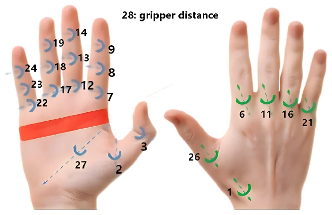
Sharpa Wave 的 FAAS 映射。Sharpa North 和 Sharpa&Dexmate 用的 Sharpa Wave 手每只有 22 个主动关节。按原生关节顺序，对应的 FAAS 槽位序列是
槽位 25 是小指的腕掌（CMC）关节，26 是拇指掌指（MCP）外展内收。没用到的槽位 {0, 5, 10, 15, 20, 27, 28, 29, 30, 31} 填 0 并排除出损失。本体感觉和动作目标用同一映射；部署时按原生顺序取回 22 个关节命令。下标都从 0 数，左右手相同。
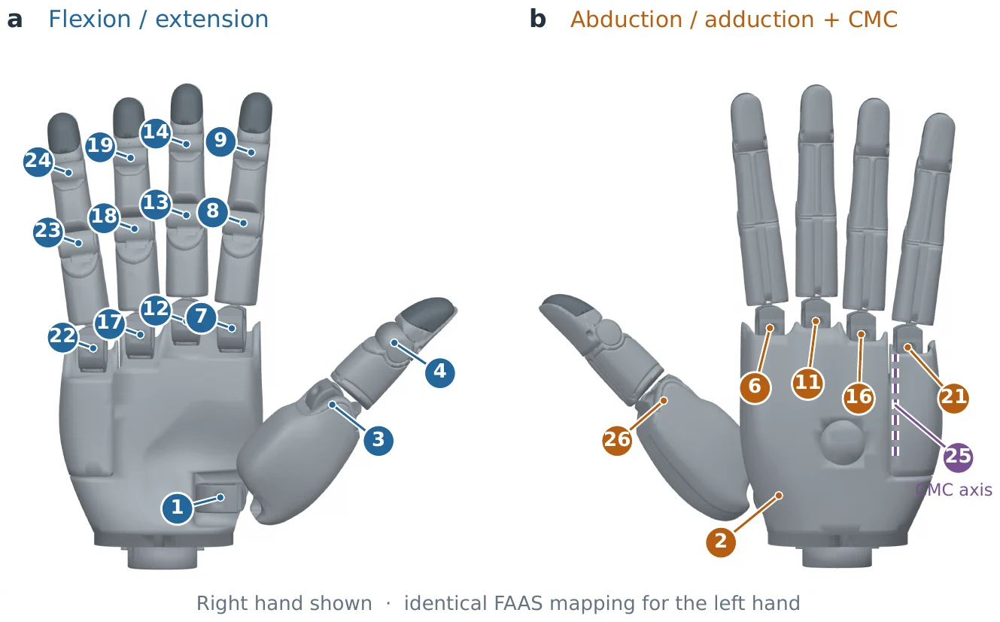
| 原生下标 | 手指 | 关节 | FAAS 槽位 |
|---|---|---|---|
| 0 | 拇指 | CMC FE | 1 |
| 1 | 拇指 | CMC AA | 2 |
| 2 | 拇指 | MCP FE | 3 |
| 3 | 拇指 | MCP AA | 26 |
| 4 | 拇指 | IP | 4 |
| 5 | 食指 | MCP FE | 7 |
| 6 | 食指 | MCP AA | 6 |
| 7 | 食指 | PIP | 8 |
| 8 | 食指 | DIP | 9 |
| 9 | 中指 | MCP FE | 12 |
| 10 | 中指 | MCP AA | 11 |
| 11 | 中指 | PIP | 13 |
| 12 | 中指 | DIP | 14 |
| 13 | 无名指 | MCP FE | 17 |
| 14 | 无名指 | MCP AA | 16 |
| 15 | 无名指 | PIP | 18 |
| 16 | 无名指 | DIP | 19 |
| 17 | 小指 | CMC | 25 |
| 18 | 小指 | MCP FE | 22 |
| 19 | 小指 | MCP AA | 21 |
| 20 | 小指 | PIP | 23 |
| 21 | 小指 | DIP | 24 |
表 7 最后一列按原生下标读出来就是 1, 2, 3, 26, 4, 7, 6, 8, 9, 12, 11, 13, 14, 17, 16, 18, 19, 25, 22, 21, 23, 24，和正文序列 \(s\) 逐项相同；用到的 22 个槽位加上列出的 10 个未用槽位正好是 0–31。和图 9（人手）比，拇指的编号不一样：人手图里 1 是外展、2 和 3 是屈伸、27 是掌上的斜轴，Sharpa 表里 1 是 CMC 屈伸、2 是 CMC 外展。槽位名义上按“功能”对齐，但拇指 CMC 这两个自由度在不同手上的对应似乎是按执行器排的（我的推断）。公开代码里找不到 Sharpa Wave 的这张映射表：仓库只有人手 MANO 21 关节到 FAAS 的映射（data_processing/utils_data_process.py:21-27），setup_env.sh:17 指向一个不存在的 sharpa_toolkit 目录。
图像型，形状 \((H,W,C)\)：照 T3，每张触觉图缩放到 224 × 224，经传感器专用的 Transformer 编码器（深 3、宽 768、12 头），再进共享的 Transformer（深 9、宽 768、12 头）。共享部分用 T3 预训练权重初始化，取最后的 [CLS] 作为触觉表示。
阵列型，形状 \((H,W,D)\)，\(H,W\) 是阵列分辨率，\(D\) 是每个单元的信号维数：对信号维做 Fourier 编码，和原始输入拼接，过 3 层 CNN 和 2 层 ReLU MLP 得到触觉 token。
状态型，形状 \((D,)\)：Fourier 编码，和原始状态拼接，过 3 层 ReLU MLP。
所有触觉 token 再经 LayerNorm、加共享的功能区嵌入、经 2 层 GELU MLP 投影到触觉专家的输入维度。
预实验发现，用 adaRMS 注入本体感觉比在 Transformer 专家里放一个独立的本体感觉 token 泛化和鲁棒性更好。做法：本体感觉做 Fourier 编码，过 3 层 MLP，LayerNorm 后和（LayerNorm 过的）π0.5 流匹配时间步特征拼接，经 adaRMS 注入注意力块。代码：状态编码器输入 1080 = 120 × (1 + 8)，三层 GELU MLP 到 1024（权重 state_encoder.mlp.0/2/4：[2048, 1080]、[2048, 2048]、[1024, 2048]），时间特征也是 1024，拼成 2048 维去调制动作专家每层的两个 RMSNorm（input_layernorm.dense 形状 [3072, 2048]，即 scale、shift、gate 三组 1024），ftp1_pytorch.py:282-292。触觉专家没有 adaRMS（ftp1_gemma_pytorch.py:91-105）。注意代码的默认值 state_input_mode='action_expert'（把状态当 token），所有脚本都改成 adarms。
三个专家各有自己的注意力投影和前馈参数。每一层把三者的 Q、K、V 序列拼起来做一次共享的带掩码注意力，然后各自做输出投影和前馈。按 query 为行、key 为列，顺序都是视觉语言、触觉、动作，分块可见性掩码是
1 表示允许注意，另外再叠加输入的 padding 掩码。动作专家预测动作块时能用两路感知，两路感知专家各自独立处理自己的观测。代码 ftp1_attention_masks.py:49-100 和这个矩阵一致；动作块内部是全双向（ftp1_pytorch.py:401 的 att_masks 是 [1] + [0]×(H−1)）。推理时视觉语言和触觉两路的 KV 缓存各算一次再拼接，去噪循环只重算动作那一路（ftp1_pytorch.py:610-642）。
状态和动作用 z-score 归一化（π0 的做法）。作者说在接触丰富的精细动作上它比分位数归一化（π0.5 的做法）生成质量更好。触觉专家是宽 1024、深 18、MLP 4096、8 头、头维 256 的 Transformer。优化器 AdamW。早期试过 Muon：收敛快、离线动作 MSE 低得多，但真机执行的泛化和鲁棒性变差，所以最终用 AdamW。
论文两处说触觉专家是“300M 参数”（§2.3）、“宽 1024、深 18、MLP 4096、8 头、头维 256”（B.5）。这组数和代码里的 gemma_300m 完全相同（src/openpi/models/gemma.py:96-104，注释写“311M params”），而 gemma_300m 在 openpi 里是动作专家。
公开代码的默认值 tactile_expert_variant = "gemma_small"（ftp1_model_config.py:71），定义是宽 512、深 18、MLP 2048、8 头、1 个 KV 头、头维 256（gemma.py:69-76）。所有示例脚本都传 gemma_small；发布的 UniVTAC 微调权重目录名带 expert_gsmall。我读了 ftp1_v0426_50kstep/model.safetensors 的文件头：gemma_tactile_expert 18 层，每层 q [2048, 512]、k/v [256, 512]、o [512, 2048]、MLP [2048, 512] × 2 + [512, 2048]，合计 99,108,864 + 末层 RMSNorm 512 ≈ 99.1M。逐层算：注意力 2048·512 + 2·256·512 + 512·2048 = 2,359,296，MLP 3·2048·512 = 3,145,728，两个 RMSNorm 1,024，每层 5,506,048，× 18 = 99,108,864，和文件头一致。
同一个文件头里：整模型 3,642,362,472 个参数（词嵌入和 lm_head 共用一份 526,647,296，只存一次）；PaliGemma 语言模型 1.98B，SigLIP 视觉塔 0.41B，动作专家 538M（其中 adaRMS 的 dense 层占了不少），T3 共享主干 9 个块 63.8M。所以“300M 触觉专家”只可能指论文作者的另一个内部配置，或者是把动作专家的规格抄错了；两者哪个对，论文和代码不能互相印证。按公开权重复现的话，触觉专家就是 99M。
数据集聚合自 26 个来源，包括人类示教、灵巧手、平行夹爪和 UMI 式数据：大规模机器人操作数据（RH20T、HumanoidEveryday、FreeTacMan、MotionTrans、Touch in the Wild），带触觉标注的人类操作数据（OpenTouch），以及较小的实验数据（DexUMI、exUMI、ViTaMIn、REASSEMBLE、UniT、RDP、VLA-Touch）。另外用 Sharpa North 平台新采了 Sharpa North-FTP-1，约 4,000 条长时程灵巧示教。
21 种传感器：7 种图像型（Sharpa DTC、ViTai-GF、FreeTacMan、exUMI、ViTaMIn、GelSight-Mini、MCTac），5 种阵列型（AetherGlove、OpenTouchGlove、LinkerHandL6Touch、3DViTac、uSkin），9 种状态型（PaxiniGlove、UnitreeDex3、InspireHand、DexumiInspire、DexumiXHand、ATI Axia80-M20、FrankaTorque、AIDIN-FT、FlexivGripperTorque）。有腕部或头部位姿的来源统一坐标方向。语言标注用 GPT-4o 改写原指令，增加多样性。各来源规模差别很大，按表 8 的倍率重采样，重采样后人手 20%、灵巧手 30%、夹爪 50%。合计约 3,000 小时。预训练时每个数据集单独算归一化统计量。编码器按传感器而不是按来源组织，同一传感器的数据共用一个编码器。
| 来源 | 本体 | 触觉 / 力传感器（类型） | Sample-Scale | Final-Percentage | 权重里的倍率 | 权重里的占比 |
|---|---|---|---|---|---|---|
| 人手（20%） | ||||||
| EgoTac-Open | Human | AetherGlove（阵列） | 0.89 | 8.2% | 0.89* | 8.30% |
| EgoTac-Kitchen | Human | AetherGlove（阵列） | 1.63 | 5.5% | 1.63 | 5.55% |
| EgoTac-Hotel | Human | AetherGlove（阵列） | 2.82 | 3.8% | 2.81 | 3.86% |
| OpenTouch | Human | OpenTouchGlove（阵列） | 11.09 | 1.5% | 11.07 | 1.55% |
| OmniSharingDB | Human | PaxiniGlove（状态） | 21.65 | 1.0% | 21.79 | 0.67% |
| 灵巧手（30%） | ||||||
| Sharpa North-FTP-1 | DexHand | Sharpa DTC（图像） | 3.29 | 9.0% | 3.29 | 11.13% |
| HumanoidEveryday | DexHand | UnitreeDex3（状态） | 13.97 | 6.0% | 13.94 | 5.09% |
| OpenLETDex | DexHand | LinkerHandL6Touch（阵列） | 14.14 | 6.0% | 14.15 | 5.03% |
| MotionTrans | DexHand | InspireHand（状态） | 26.39 | 3.6% | 26.38 | 3.61% |
| DexumiInspire | UMI+DexHand | DexumiInspire（状态） | 35.62 | 3.0% | 35.64 | 3.06% |
| DexumiXHand | UMI+DexHand | DexumiXHand（状态） | 56.02 | 2.4% | 56.02 | 2.36% |
| 夹爪 / UMI（50%） | ||||||
| VTouch-D-WHEEL | Gripper | ViTai-GF（图像） | 2.77 | 5.7% | 2.76 | 5.75% |
| FreeTacMan | UMI | FreeTacMan（图像） | 7.75 | 4.4% | 7.74 | 4.46% |
| TouchInTheWild | UMI | 3DViTac（阵列） | 10.79 | 4.0% | 10.79 | 4.10% |
| VTouch-QINGLONG | Gripper | ViTai-GF（图像） | 12.73 | 3.9% | 12.73 | 3.87% |
| exUMI | UMI | exUMI（图像） | 13.73 | 3.8% | 13.75 | 3.86% |
| RH20T-Cfg6 | Gripper | ATIAxia80M20（状态） | 13.88 | 3.8% | 13.80 | 3.82% |
| ViTaMIn | UMI | ViTaMIn（图像） | 22.19 | 3.4% | 22.20 | 3.40% |
| RH20T-Cfg7 | Gripper | uSkin（阵列）；ATIAxia80M20（状态） | 22.89 | 3.4% | 22.83 | 3.37% |
| RH20T-Cfg5 | Gripper | FrankaTorque（状态） | 24.42 | 3.3% | 24.35 | 3.30% |
| REASSEMBLE | Gripper | AIDIN-FT（状态） | 27.77 | 3.2% | 27.78 | 3.24% |
| Unit-Bimanual | Gripper | GelSight-Mini（图像） | 63.93 | 2.6% | 63.93 | 2.57% |
| RDP | Gripper | GelSight-Mini、MCTac（图像）；FlexivGripperTorque（状态） | 89.76 | 2.4% | 89.78 | 2.28% |
| Unit | Gripper | GelSight-Mini（图像） | 132.83 | 2.2% | 132.84 | 2.09% |
| VLA-Touch | Gripper | GelSight-Mini（图像） | 170.36 | 2.0% | 170.36 | 2.01% |
| RDP-Bimanual | Gripper | GelSight-Mini、MCTac（图像）；FlexivGripperTorque（状态） | 199.20 | 1.9% | 199.16 | 1.67% |
* EgoTac-Open 在权重里只有一个 _partial 副本，倍率 0.89 是表 8 的值，我没法从文件独立算出。权重里的名字和表 8 不同：EgoTac 三个是 AetherData_20260331、AetherData_260204_7.5H_v0211、AetherData_260121_5H_v0211，OmniSharingDB 是 Paxini-new_v0214，Sharpa 是 sharpa；对应关系是按倍率配的。
26 个来源：表 8 人手 5 行、灵巧手 6 行、夹爪 15 行，合计 26。21 种传感器：表 8 里不同的传感器名去重是 21 个，和附录 C 列的 7 + 5 + 9 一一对应，也和图 4 饼图的 9 / 7 / 5 一致。占比：人手 8.2 + 5.5 + 3.8 + 1.5 + 1.0 = 20.0，灵巧手 9.0 + 6.0 + 6.0 + 3.6 + 3.0 + 2.4 = 30.0，夹爪 15 行合计 50.0，总 100.0，成立。
3,000 小时：表 8 没有时长列，论文也没给每个来源的小时数，所以加不出来。公开权重的 dataset_stats.json 有帧数：把同一来源的 _copyN 副本加起来，重采样后训练集共 233,524,112 帧、718,250 条轨迹（含副本）；每个来源只数一份（EgoTac-Open 按 0.89 倍还原），去重约 5,420 万帧。3,000 小时 = 1,080 万秒，对应的平均帧率是：按重采样后的帧数 21.6 帧/秒，按去重帧数 5.0 帧/秒。我不知道各来源的帧率（文件里没有），所以说不清 3,000 小时是“重采样前”还是“重采样后”的时长（未核实）。
如果按“倍率 = 复制次数”还原原始规模（权重文件证实了这一点：例如 Unit 有 132 个完整副本加一个部分副本），原始数据里人手占 62.8%、灵巧手 17.1%、夹爪 20.1%，三个 EgoTac 手套来源合计 62%（按 Σ 占比 / 倍率算）。也就是说，原始数据以手套为主，重采样把夹爪从约五分之一放大到一半（我的推断，前提是各来源帧率相近）。
权重里每个来源的重采样倍率（总帧数 / 一份副本的帧数）和表 8 的 Sample-Scale 逐行相差不超过 0.15（上表第 6 列）。最终占比大多相差 0.1 以内，但 Sharpa North-FTP-1 是 11.13% 对表 8 的 9.0%，HumanoidEveryday 5.09% 对 6.0%，OpenLETDex 5.03% 对 6.0%，OmniSharingDB 0.67% 对 1.0%（上表标橙的三行）。灵巧手合计 30.28%，仍接近 30%。权重的 train_config.json 里实验名是 pretrain_gold_16H20_zmj_v0409_final_no_REASSEMBLE_FAST_DECAY，数据配置是 v0409，模型叫 v0426；表 8 可能来自另一版配置（未核实）。
另外两处：（1）Sharpa North-FTP-1 正文说“约 4,000 条示教”，权重里 sharpa 一份副本有 9,320 条轨迹、789.6 万帧，可能是把长示教按子任务切开了（未核实）；（2）实验名里有 “no_REASSEMBLE”，但统计和 tokenizer 里都有 REASSEMBLE，名字和内容对不上，我不清楚原因。
预训练。基于 π0.5 代码库。视觉编码器、语言 tokenizer、视觉语言专家和动作专家从 π0.5 初始化；图像型的共享触觉主干从 T3 初始化；传感器专用编码器、触觉专家、功能区嵌入、adaRMS 本体感觉注入器和动作投影从零开始。48 张 NVIDIA H20，50k 步，全局 batch 768，学习率从 1e-4 衰减到 5e-5。超过 50k 步性能就饱和，作者推测原因是触觉数据多样性有限，以及“保留 π0.5 知识”和“学触觉技能”之间的权衡；更多样的数据或和 π0.5 数据共训可能改善。
预训练基础设施。新写的训练框架把不同领域的数据自动分到不同 GPU，保证每张卡上的 batch 数据格式一致，便于并行。领域专用模块的梯度独立更新，共享模块的梯度先合并再联合更新。
微调。8 张 A800，每个数据集 20k 步，batch 64，学习率从 5e-5 衰减到 5e-6，其余同预训练。
公开权重的 train_config.json：batch 768（和论文一致）；学习率 warmup 5,000 步、峰值 1e-4、decay_steps 180,000、终值 1e-5、num_train_steps 400,000；Adam β₂ 0.98、ε 1e-6、权重衰减 1e-10、梯度裁剪 1.0；实验名带 “16H20”。按代码的余弦公式（scripts/zarr_train_ftp1_pytorch.py:638-654），第 50k 步的进度是 (50,000 − 5,000) / 175,000 = 0.257，学习率 = 1e-5 + 9e-5 × ½(1 + cos 0.257π) = 8.6e-5；降到 5e-5 要到约第 98,700 步。所以“50k 步、1e-4 → 5e-5”和这份配置对不上，像是一个计划跑 40 万步、在 5 万步处取出的权重（我的推断）。“48 张 H20”和实验名里的 “16H20” 也不一致，可能指 16 台机器或另一次运行（未核实）。
代码的“异构预训练基础设施”是 DomainBatchSampler（src/openpi/training/data_loader.py:646-770）：每个 batch 只含一个领域，打乱后轮流分给各卡，所以每张卡每一步是单一领域，但领域并不固定在某张卡上。梯度合并就是普通的 DDP（find_unused_parameters=True，zarr_train_ftp1_pytorch.py:516-527），没有专门的“领域模块独立、共享模块合并”逻辑；按 DDP 的行为，没用到某个传感器编码器的卡会贡献零梯度参与平均，严格说不是“独立更新”（我的推断，没有运行）。
微调：UniVTAC 示例脚本是 20k 步、全局 batch 64（4 卡 × 16）、5e-5 → 5e-6、warmup 500，和论文一致，只是用 4 卡不是 8 卡。
| 设置 | 领域 | 机器人 | 末端 | 触觉传感器 | 类型 |
|---|---|---|---|---|---|
| UniVTAC | 仿真（未见），夹爪 | Franka | Franka | GelSight-Mini | 图像 |
| Sharpa North | 真机，灵巧手 | Sharpa North | Sharpa Wave | Sharpa DTC | 图像 |
| Sharpa&Dexmate | 真机，灵巧手 | Dexmate（未见） | Sharpa Wave | Sharpa DTC | 图像 |
| FlexivXense | 真机，夹爪 | Flexiv | Robotiq | Xense（未见） | 图像 |
| TactileUMI | 真机，夹爪 | Franka | 3D 打印（未见） | Contactile（未见） | 阵列 |
UniVTAC 按原协议，每个任务用 50 条官方示教微调。排除两个任务：Grasp Classify 已被以前的基线完美解决；Insert HDMI 的数据是运动规划采的，每条示教都完美插入，缺少接触反馈，不适合评测触觉策略。剩下 6 个分两类：手内操作（Lift Bottle、Lift Can、Put Bottle）和接触感知的插拔（Pull-out Key、Insert Hole、Insert Tube）。
Sharpa North：三个长时程任务共 250–400 条示教微调。Draw Balloon 是在气球上画笑脸；Fix Hand 是给一只损坏的小模型手装上手指，分两段评：先撕下贴纸（Tear），再装手指完成修复（Finish）；Twist Cap 是双手拧瓶盖。作者说这些任务故意做难，用来探 FTP-1 的能力边界。Sharpa&Dexmate：翻书、擦盘，测按压和控力，每任务 100 条示教。
“250–400 条”是三个任务合计还是每个任务，原文写法不明确。
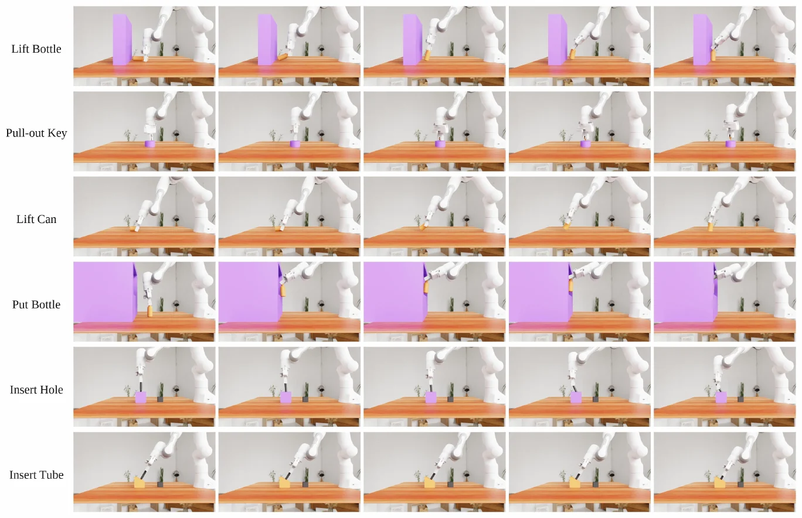
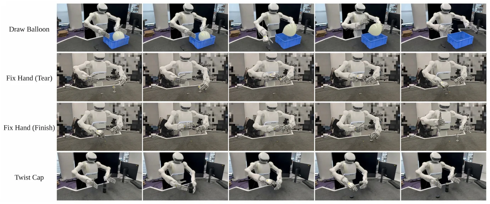
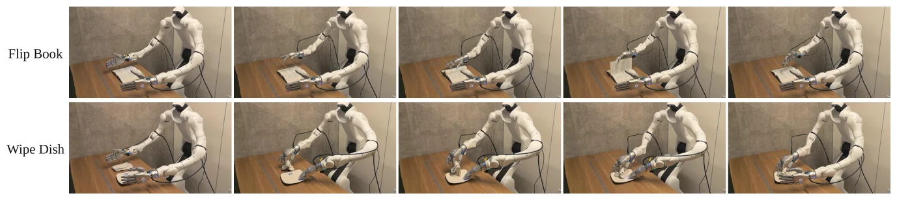
Xense（图像型）最像 GelSight-Mini；Contactile（阵列型）最像 AetherGlove。
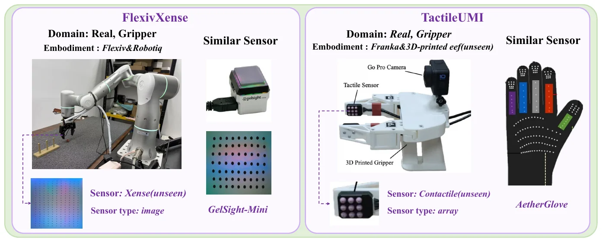
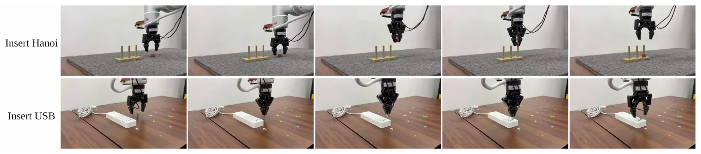
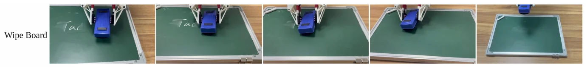
| 方法 | Lift Bottle | Pull-out Key | Lift Can | Put Bottle | Insert Hole | Insert Tube | Avg. | Avg. w/o Lift |
|---|---|---|---|---|---|---|---|---|
| FTP-π0.5 | 77 | 30 | 26 | 19 | 47 | 72 | 45.16 | 42 |
| NTP-1 | 88 | 38 | 66 | 32 | 31 | 45 | 50.00 | 36.5 |
| FTP-1 | 97 | 48 | 65 | 47 | 64 | 79 | 66.66 | 59.5 |
NTP-1：300/6 = 50.00，146/4 = 36.5，都对。值得注意：NTP-1 的总平均高于 FTP-π0.5，但去掉两个 Lift 以后反而更低（36.5 对 42），它的优势全在 Lift 这两个“不需要触觉”的任务上；在两个插入任务上 NTP-1（31、45）明显低于 FTP-π0.5（47、72）。这和 §4.2“数据分布更近”的解释一致：非触觉预训练帮的是视觉能完成的部分。
在 FTP-1 用的同一批机器人轨迹上、同样的预算继续预训练 π0.5（无触觉）。UniVTAC 平均 57.0% 对 FTP-1 的 66.7%；去掉两个 Lift 是 44.0% 对 59.5%。提升 9.7 和 15.5 个点。去 Lift 的平均更有信息量，因为那两个任务视觉就能做。
| 设置 | 数据比例 | 训练步数 | Avg. | Avg. w/o Lift |
|---|---|---|---|---|
| 0%（FTP-π0.5） | 0% | 0 | 45.2 | 42.0 |
| 50% | 50% | 25,000 | 59.0 | 46.0 |
| 100%（FTP-1） | 100% | 50,000 | 66.7 | 59.5 |
0% → 50%：总平均 +13.8，去 Lift +4.0；50% → 100%：再 +7.7 和 +13.5；全量比 FTP-π0.5 高 21.5 和 17.5。性能随数据和步数一起增加而持续上升，从一半到全量时非 Lift 任务涨得更多。（算术核对见读者注 13。）
用冻结特征做力估计和滑动检测，比较 T3、FTP-1 主干、FTP-1 tokenizer 三种特征。力估计用线性探针，指标是平均绝对误差（牛）；滑动检测用注意力探针，指标 F1。探针训练种子 42、43、44 取平均。
特征提取。用 GelSight Mini 的图像编码器和共享图像 Transformer，来自原始 T3 权重或 FTP-1 50k 步权重。T3 和 FTP-1 主干特征是共享 Transformer 的 768 维 [CLS]；FTP-1 tokenizer 特征是之后的 512 维图像投影输出（在功能区嵌入和共享投影之前）。特征冻结，探针头在缓存的特征上训练。TacBench 样本含当前帧和 5 步前的一帧；FeelAnyForce 只有一帧。输入都缩放到 224 × 224，通道归一化用训练集统计。
数据划分。TacBench T1（来自 Sparsh）：用球形和尖头压头的第 1、2 批训练，留出平头压头第 1 批测试，训练轨迹留 10% 验证。TacBench T2：用公开数据重建的球形 1–6 批，按轨迹不相交划分训练 / 验证 / 测试，测试 25,035 个样本，三种特征用同一划分。FeelAnyForce：用发布的基本压头划分，CSV 里训练 96,520、验证 10,725、测试 2,864。
探针训练。力探针是对有序帧特征的一个仿射映射。滑动探针是 768 维、12 头的注意力池化，接滑动分类器和一个辅助的力变化头。Adam，学习率 1e-4，batch 256，最多 100 轮，按验证损失选检查点，早停耐心 15 轮。特征和力目标的标准化只用训练样本。力 MAE 对三个力分量和测试样本平均。滑动 F1 在预测概率阈值 0.4 之后，再在每条轨迹内要求连续三个正例。T2 的参考是冻结的 SPARSH-MAE 编码器（原生两帧输入 + 同样的注意力探针）；FeelAnyForce 的参考是它发布的、用力和深度监督训过的 DINOv2 主干，冻结后接同样的线性力探针，所以这个参考代表“任务专门监督之后”能拿到的力信息。
| 基准和指标 | T3 | FTP-1 主干 | FTP-1 tokenizer | 参考 |
|---|---|---|---|---|
| T1 力：线性 MAE ↓（N） | 0.106 | 0.107 | 0.116 | — |
| T2 滑动：注意力 F1 ↑ | 0.725 | 0.780 | 0.786 | 0.922 |
| FeelAnyForce：线性 MAE ↓（N） | 0.273 | 0.314 | 0.424 | 0.041 |
T1 力估计上 FTP-1 主干 0.107 N，接近 T3 初始化的 0.106 N，说明策略预训练之后定量的力信息仍然可得。T2 上滑动 F1 从 T3 的 0.725 升到 0.780（主干）和 0.786（tokenizer）。注意力探针能从冻结的 FTP-1 特征里恢复和操作相关的接触动态，补充下游策略评测。（FeelAnyForce 那一行变差，正文没讨论，见读者注 13。）
单个真机任务 20 次，成功率 50% 附近的二项标准误是 √(0.5 × 0.5 / 20) = 11.2 个点，所以表 2、表 3 的单列差距（多数 5–25 个点）大都在一两个标准误以内，单任务排名不太可靠。合起来看：表 2 六列共 120 次，FTP-1 成功 75 次、π0.5 55 次，双比例 z = 2.59，p ≈ 0.010；表 3 三列共 60 次，FTP-1 28 次、π0.5 9 次，z = 3.76，p ≈ 0.0002；UniVTAC 600 次，FTP-1 400 次对 π0.5 295 次，z = 6.1。这里把各任务的试验当成独立同分布，是粗略的检验（我自己算的，论文没有误差条，也没说试验的初始条件怎么定）。所以“FTP-1 整体更好”站得住，单任务上的细节差异（比如 Fix Hand (Tear) 80 对 80 对 70）不该过度解读。
以下按 README、data_processing/README.md、UniVTAC/Installation_FTP1.md 和源码整理，提交 89fa681（2026-07-15）。我没有运行任何命令，也没有下载权重。仓库 git 历史有 15 个提交，主体是一次批量上传，之后多是 README 修改，所以“哪些是新写的、哪些继承自 openpi”是按文件名和内容判断的。路径都相对仓库根目录。
| 路径 | 内容 | 来源 |
|---|---|---|
| src/openpi/models_pytorch/ftp1_pytorch.py | FTP-1 主模型（772 行）：前缀 / 触觉 / 后缀三段嵌入、流匹配损失、10 步 Euler 采样、KV 缓存 | 新 |
| …/ftp1_blocks.py | 异构触觉编码器 FTP1HptTactileEncoder（979 行）：状态型 FourierStateEncoder、阵列型 MatrixCNNEncoder、图像型（接 T3）、二值型；功能区嵌入、统一投影、按传感器存取 tokenizer | 新 |
| …/t3_tactile_encoder.py | T3 的传感器专用 ViT 和共享主干（389 行），下载 T3 权重 | 改自 T3 |
| …/ftp1_gemma_pytorch.py、ftp1_attention_masks.py | 三专家的逐层拼接注意力（556 行）；分块掩码（148 行） | 新 |
| …/ftp1_model_config.py | 常量：24 个功能区、32 维手、120 维动作、视野 32；T3 传感器名表；默认触觉专家 gemma_small | 新 |
| …/transformers_replace/ | 改过的 HF Gemma（adaRMS 条件维度、只调制末尾若干 token）；安装时要拷进 site-packages | openpi 改 |
| src/openpi/dataset_zarr.py | zarr 数据集（2,871 行）：UAS 拼装、动作掩码、功能区 ID（左手 +24）、按领域归一化 | 新 |
| src/openpi/training/data_loader.py | DomainBatchSampler：每个 batch 只含一个领域 | openpi 改 |
| src/openpi/policies/ftp1_inference_wrapper.py | 推理封装（1,029 行）：加载、归一化、反归一化 | 新 |
| scripts/zarr_*_ftp1*.py | 训练（1,142 行）、评估、归一化统计、调试推理 | 新 |
| scripts_exp_zarr/ | 三组启动脚本：univtac、pretrain_small、univtac_example_real_machine | 新 |
| data_processing/ | 各数据集转 zarr 的解析器（aether、motiontrans、touchinthewild、univtac）和合并脚本 | 新 |
| UniVTAC/ | UniVTAC 基准的拷贝 + policy/FTP1/ 部署代码和评测脚本 | 第三方 + 新 |
| examples/、packages/openpi-client/、README_openpi.md、LICENSE_GEMMA.txt | openpi 原样带过来的（ALOHA、DROID、LIBERO、UR5 示例） | openpi |
FTP-1 是 openpi 的 PyTorch 分支上改出来的。保留的：PaliGemma（gemma_2b）视觉语言专家、gemma_300m 动作专家、流匹配和 adaRMS、π0.5 权重的加载（pytorch_weight_path 以 pi05 结尾时按名字和形状匹配加载，zarr_train_ftp1_utils.py:323-398）。新增的：第三路触觉专家和它的注意力掩码；异构触觉编码器；120 维 UAS 和损失掩码；zarr 数据管线和按领域的 z-score 统计；单领域 batch 采样。训练走 PyTorch（torch.distributed.run + DDP），openpi 的 JAX 训练入口 scripts/train.py 还在但 FTP-1 不用。π0.5 的动作维数是 32，这里是 120，所以 action_in_proj、action_out_proj 和 adaRMS 的 dense 层（条件维度 1024 → 2048）形状对不上，只能从头训（按形状匹配逻辑推断）。
| 类型（代码里的名字） | 结构（代码） | 和论文附录 B.2 |
|---|---|---|
| 图像型 image | 缩放到 224；传感器专用 ViT（patch 16、宽 768、3 层、12 头，前置 CLS）；共享 T3 主干（宽 768、9 层、12 头 + LayerNorm）；取 CLS；image_proj 768 → d（t3_tactile_encoder.py:36-51，ftp1_blocks.py:329-345, 445-457） | 一致；多一个 768 → 512 的投影（读者注 7） |
| 阵列型 matrix | Fourier 编码 + 原值拼接；3 层 3×3 卷积（GELU，图大于 4 时 maxpool，通道 2d）；Flatten → Linear → ReLU → Linear（ftp1_blocks.py:126-295） | 一致 |
| 状态型 state | Fourier 编码 + 原值拼接；3 层 MLP，激活 GELU（ftp1_blocks.py:27-123） | 论文写 ReLU |
| 二值型 binary | nn.Embedding(2, d)（:389-391） | 论文没有 |
tokenizer 的键是 {传感器名}_{类型}_{形状}（tactile_identity.py:83），存成 hpt_tokenizer/{键}.safetensors。所以“按传感器共享”其实是“按传感器 + 观测形状共享”：公开权重里有 29 个传感器 tokenizer 文件加一个 shared_image_chunk_encoder（T3 主干），例如 OpenTouch 有 4 种形状（3×2、4×2、4×3、7×11）、AetherGloveV1 有 2 种、InspireHand 和 UnitreeDex3 各 2 种。
公开权重 hpt_tokenizer/ 里去重后是 22 个传感器名。和论文附录 C 的 21 种比：SharpaWave_image 对应论文的 “Sharpa DTC”；OpenLoongVTouch_image 应是 ViTai-GF（两个 VTouch 来源共用）；REASSEMBLE_FT_state_6 对应 AIDIN-FT；FlexivGripperForce 对应 FlexivGripperTorque；多出一个 LinkerHandL6Torque_state_6，论文的 21 种里没有（OpenLETDex 在表 8 只列了 LinkerHandL6Touch）。所以按权重数是 22 种（对应关系是我按名字配的，我的推断）。代码里没有传感器注册表，传感器名是 zarr 里的自由字符串；没有 Xense 或 Contactile 的条目，也没有 “SharpaDTC”。XenseWS 只出现在 UniVTAC 仿真的传感器定义里（UniVTAC/envs/sensors/tactile.py:163-236）。
数据发布：Hugging Face 的 FTP-1-Dataset 卡片说“包含 18 个数据包”，但列出、实际存在的是 15 个（FreeTacMan、MotionTrans、RDP、RDP_Bimanual、RH20T 三个配置、Unit、Unit_Bimanual、VLA_touch、ViTaMIn、两个 VisuoTactile、exUMI、sharpa），共约 7.5 TB，其中 VisuoTactile_D-WHEEL 3.3 TB、sharpa 1.9 TB。没有发布的 11 个：三个 EgoTac、OpenTouch、OmniSharingDB、HumanoidEveryday、OpenLETDex、两个 DexUMI、TouchInTheWild、REASSEMBLE。也就是说，原始数据里占大头的手套数据（读者注 5）没有公开。卡片和模型卡都没写许可。
UniVTAC/ 是 UniVTAC 基准（Isaac Lab + TacEx 的视触觉仿真）的拷贝，带它自己的 ACT、TactileACT 基线，FTP-1 加了 policy/FTP1/deploy_policy.py（357 行）、deploy.yml、scripts/eval_ftp1.py（1,402 行）和几个 shell 脚本。环境要求按 Installation_FTP1.md：Isaac Sim 4.5.0、Isaac Lab 2.1.1、TacEx、libuipc、cuRobo。scripts/shell/eval_ftp1_batch.sh 评 6 个任务（pull_out_key、insert_hole、insert_tube、lift_bottle、lift_can、put_bottle_in_shelf，第 34–41 行），不含 grasp_classify 和 insert_HDMI，和附录 E.2 一致；每任务 TOTAL_NUM=100 个种子（第 18 行），和论文“每任务 100 次”一致。每次推理执行动作块的前 CHUNK_FIRST_N=20 步（第 28 行；deploy.yml 里另有 chunk_len 16，两处不一样，以哪个为准要看 eval_ftp1.py 的读取顺序，未核实）。脚本里的权重路径写死成作者集群的 /cephfs/...，要自己改。
许可要注意：UniVTAC/LICENSE 是 Apache-2.0；ACT、TactileACT 是 MIT；third_party/TacEx/.../libuipc/python/LICENSE 是 GPL-3.0；libuipc 里的 TetGen 是它自己的限制性许可；TacEx 顶层没有 LICENSE 文件。
训练只吃 zarr。每个来源先用 data_processing/parse_data_module/parse_data_*.py 转成约定的键（data_processing/README.md:95-113, 149-166）：timestamps；相机 camera_{main,ego}_rgb、{left,right}_wrist_camera_rgb、camera_ego_pose；本体 {side}_wrist_pose、{side}_arm_joints、{side}_hand_joints（加 _idx 指明 FAAS 槽位）；触觉每组四个键 {side}_tactile_{data,area,sensor,type}_{group}，分别是数据、功能区号、传感器名、类型；另有 sub_task_instruction、supplementary_joints。README 列的类型是 state | binary | image，漏了 matrix。公开的解析器只有 aether、motiontrans、touchinthewild、univtac 四个，覆盖 26 个预训练来源中的 5 个（三个 EgoTac、MotionTrans、TouchInTheWild），其他 21 个来源（包括 Sharpa）的转换代码没有发布。归一化统计用 scripts/zarr_compute_norm_stats.py，按领域独立算触觉、手关节、腕位姿（independent_norm_mode="all"），其余共享。
两个可能的问题（读代码看到的，没有运行验证）：TouchInTheWild 的 3DViTac 被标成 "state" 类型、每区形状却是二维的 (12, 32)（parse_data_touchinthewild.py:220-223），而公开权重里它的 tokenizer 叫 3DViTac_matrix_12_32，说明作者实际训练时用的是阵列型，公开解析器和权重不一致；dataset_zarr.py:1508 判断是否需要缩放时取的是 shape[-2], shape[-1]，对 (H, W, 3) 的图像总是成立，所以 224 的图也会再缩放一次（无害但多余）。
| 项目 | 论文 | 代码 89fa681 / 公开权重 |
|---|---|---|
| MTTS 槽位 | 24 个 / 手，左右两套嵌入 | 一致：24，嵌入 [48, d] |
| 夹爪 | 两侧传感器 → 槽位 0、1；动作槽位 28 | 一致 |
| 图像型编码器 | 3 层 ViT + 9 层 T3（768），取 CLS | 一致；另加 768 → 512 投影 |
| 阵列型 | Fourier + 3 层 CNN + 2 层 ReLU MLP | 一致 |
| 状态型 | Fourier + 3 层 ReLU MLP | 激活是 GELU |
| 触觉专家 | 300M；宽 1024、MLP 4096 | gemma_small：宽 512、MLP 2048，99.1M（读者注 8） |
| 分块掩码 | [[1,0,0],[0,1,0],[1,1,1]] | 一致 |
| 本体感觉 | adaRMS | 脚本用 adaRMS；代码默认是 state token |
| 动作 | UAS，维数未写 | 120 维（右臂在前），视野 32，10 步 Euler |
| 归一化 | z-score，每个数据集单独统计 | 脚本用 z-score（代码默认分位数）；按领域独立 |
| 优化器 | AdamW | AdamW；EMA 参数在 PyTorch 训练里不生效（zarr_train_ftp1_pytorch.py:743） |
| 预训练 | 48 × H20，50k 步，batch 768，1e-4 → 5e-5 | 权重配置：batch 768，计划 40 万步、余弦到 1e-5，第 50k 步约 8.6e-5（读者注 11）；仓库没有完整预训练配方，pretrain_small 是 8 卡 × 16、15 万步，且不加载 π0.5 |
| 异构预训练框架 | 领域分卡；领域模块独立、共享模块合并 | 单领域 batch 轮流分卡 + 普通 DDP（读者注 11） |
| 微调 | 8 × A800，20k 步，batch 64，5e-5 → 5e-6 | UniVTAC 脚本 4 卡、其余一致 |
| Sharpa Wave 映射 | 表 7 | 代码里没有（读者注 9） |
| Xense、Contactile | §4 的新传感器 | 代码和权重里都没有它们的配置 |
# 1. 安装（和 openpi 相同的流程；Python 3.11） GIT_LFS_SKIP_SMUDGE=1 uv sync GIT_LFS_SKIP_SMUDGE=1 uv pip install -e . cp -r ./src/openpi/models_pytorch/transformers_replace/* .venv/lib/python3.11/site-packages/transformers/ # 2. 数据：把自己的数据转成 zarr（见 data_processing/README.md），写数据集 JSON # 示例：scripts_exp_zarr/univtac/dataset_univtac.json # 3. 归一化统计（见过的本体建议直接拷预训练权重里的 normalization/） bash scripts_exp_zarr/univtac/compute_norm_stats_univtac_example.sh # 4. 微调（pytorch_weight_path 指向下载的 ftp1_pretrain_v0426_50kstep） bash scripts_exp_zarr/univtac/train_univtac_example.sh # 5. 在 UniVTAC 里评测（先按 UniVTAC/Installation_FTP1.md 装 Isaac Sim / Isaac Lab / TacEx） cd UniVTAC && bash scripts/shell/eval_ftp1_batch.sh # 结果在 UniVTAC/eval_results
单独推理用 FTP1InferenceWrapper（src/openpi/policies/ftp1_inference_wrapper.py）：构造参数 checkpoint_dir, domain_name, device, num_inference_steps=10；infer() 要传图像、(T, state_dim) 的状态、提示词，以及三个触觉字典：数据 (T, 区数, …)、每组的功能区号（夹爪是 [0, 1]）、传感器名（例如 "GelSightMini"）。返回反归一化的 (32, 120) 动作块，一般执行前几步再重新推理。接新传感器时传感器名要和训练时一致，否则会建一个新的随机初始化 tokenizer（按 tokenizer 键的逻辑推断）。
几点提醒：（1）换新传感器微调时，论文说复用触觉专家、功能区嵌入和 T3 主干，新建传感器编码器；代码里这一步是自动的（找不到对应键就新建），但没有单独的“冻结哪些层”的开关，除了 frozen_shared_chunk。（2）pretrain_small 不加载 π0.5（pytorch_weight_path=""），配置里的 JAX weight_loader PyTorch 训练器不用，想从 π0.5 起步要自己填路径。（3）T3 权重的下载地址指向 t3_large/encoders/（ftp1_model_config.py:41），README 里提供的是 “t3_base_encoder_rename”，两者是否同一份我没核对。（4）SwanLab 版本的启动脚本里写了一个 API key 的默认回退值（*_swanlab.sh:25），用之前应换成自己的。
以下各条都是本页加的核算或对照，不属于论文内容。编号按首次写作的顺序，点击跳到对应位置。
| 名称 | 是什么 | 主页 | 论文 |
|---|---|---|---|
| FTP-1 | 本文 | 项目页 · 代码 | 2606.13102 |
| ftp1_v0426_50kstep | 预训练权重 | Hugging Face | – |
| ftp1_univtac_finetune | UniVTAC 6 个任务的微调权重 | Hugging Face | – |
| FTP-1-Dataset | 预训练数据（已发布 15 个来源） | ModelScope 镜像 | – |
| UniVTAC | 视触觉仿真基准，§3 的仿真评测 | github | 2602.10093 |
| openpi | π0 / π0.5 官方代码，本仓库的基础 | github | π0.5：2504.16054 |
| T3 | 可迁移触觉 Transformer，图像型共享主干的初始化 | github | 2406.13640 |
| HPT | 异构预训练 Transformer，“异构编码器”思路的来源 | – | 2409.20537 |
| UniDex | UAS 和 FAAS 的来源 | – | 2603.22264 |
| Tactile-VLA | 基线；TactileUMI 设置来自它 | – | 2507.09160 |
| ViTacFormer | 论文给 Sharpa North / DTC 的引用 [10] | – | 2506.15953 |
| RH20T | 预训练来源（Cfg5、6、7） | rh20t.github.io | 2307.00595 |
| REASSEMBLE | 预训练来源（AIDIN-FT 力传感） | 项目页 | 2502.05086 |
| OpenTouch | 预训练来源（全手触觉手套） | 项目页 | 2512.16842 |
| Humanoid Everyday | 预训练来源（Unitree Dex3） | 项目页 | 2510.08807 |
| FreeTacMan | 预训练来源（视触觉 UMI） | 项目页 | 2506.01941 |
| Touch in the Wild | 预训练来源（3D-ViTac） | 项目页 | NeurIPS 2025 |
| ViTaMIn | 预训练来源 | 项目页 | 2504.06156 |
| DexUMI | 预训练来源（Inspire、XHand 两套） | 项目页 | 2505.21864 |
| MotionTrans | 预训练来源；代码致谢 | 项目页 | 2509.17759 |
| RDP | 预训练来源（GelSight-Mini、MCTac） | 项目页 | 2503.02881 |
| UniT | 预训练来源（Unit、Unit-Bimanual） | 项目页 | RA-L 2025 |
| exUMI、VLA-Touch | 预训练来源 | – | 2509.14688、2507.17294 |
| Sparsh / TacBench | 附录 F.3 的 T1、T2 探针 | github | 2410.24090 |
| FeelAnyForce | 附录 F.3 的力估计数据 | prg.cs.umd.edu | ICRA 2025 |
| LingBot-Touch | 本站精读；异构触觉编码器，拿 FTP-1 做基线 | – | 2611.12806 |